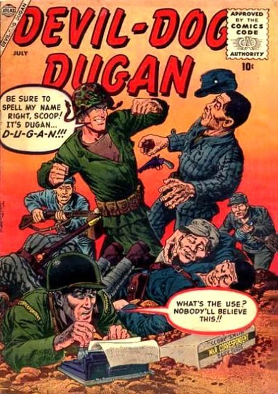
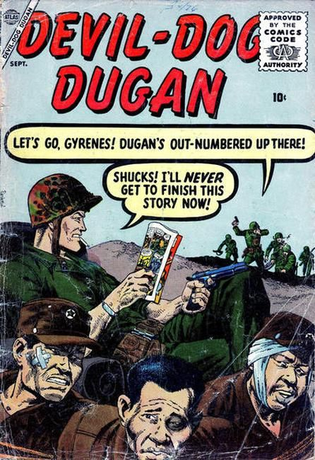
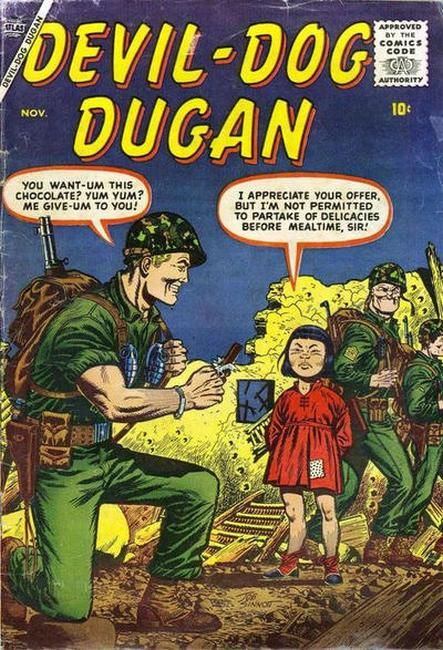
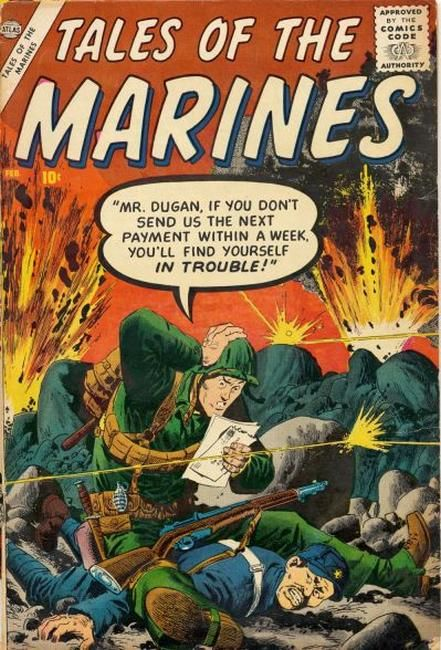
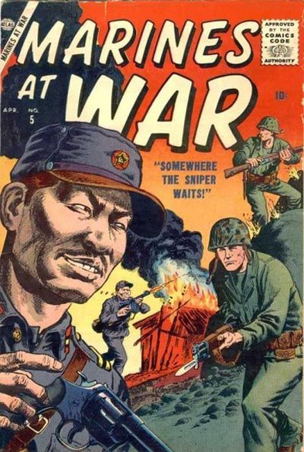
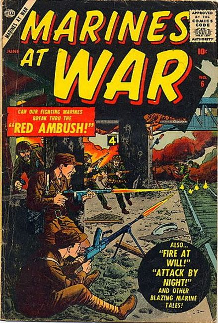
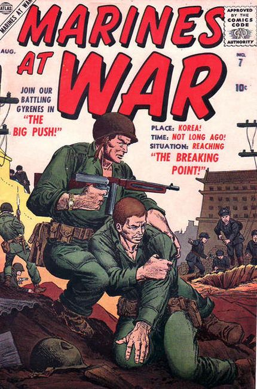

Devil Dog Dugan

Series: Devil Dog Dugan #1-3, Tales of the Marines #4, Marines at War #5-7
Publisher: Atlas, Marvel 1956 to 1957
Covers by John Severin, illustrated by Sol Brodsky


Numbering continues with Tales of the Marines (Marvel, 1957 series) #4

Numbering continues with Marines at War (Marvel, 1957 series) #5


